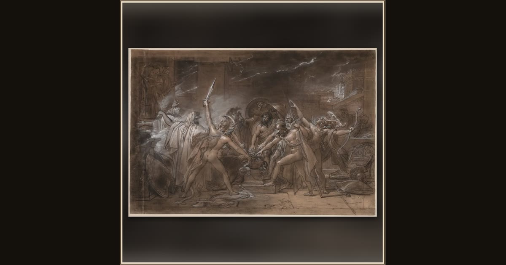

The Oath of the Seven Chiefs against Thebes
Anne-Louis Girodet de Roucy-Trioson (French, 1767–1824) · c. 1800 · cma
Seven armed chiefs raise weapons and reach toward a slaughtered bull; the scout reports their oath against Thebes after they touch the bull's blood (40). Explore its place in Aeschylus's Plays, Seven Against Thebes, line 40.